Reference
Credits and sources
Photographs
All photographs come from the NASA Image and Video Library. NASA material is generally not subject to copyright in the United States and may be used for educational purposes, provided NASA is credited as the source. Some satellite images are joint products with the partners named in their credit lines. NASA does not endorse this site or its content.
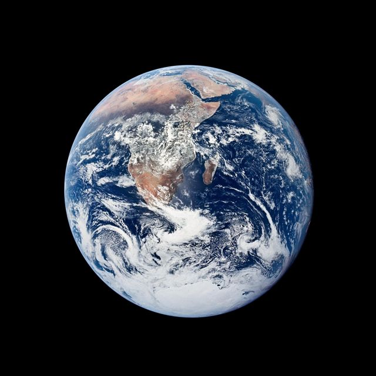
Earth seen by the Apollo 17 crew, 7 December 1972
Credit: NASA
NASA ID: as17-148-22727 · Original record
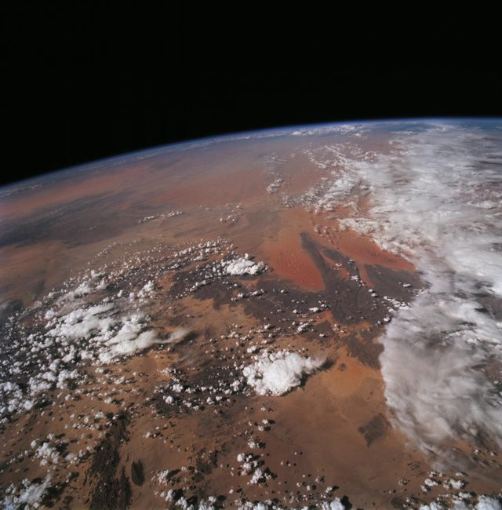
Sahara Desert, Algeria, from Space Shuttle mission STS-68
Credit: NASA
NASA ID: sts068-228-081 · Original record
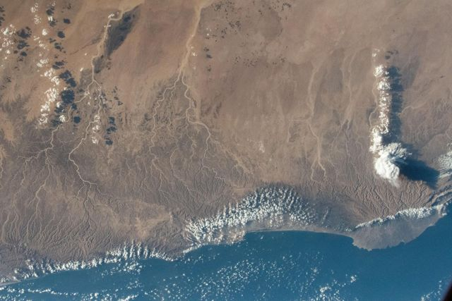
Oman and the Dhofar mountains on the Arabian Sea
Credit: NASA / photographed by Sultan Alneyadi, ISS Expedition 69
NASA ID: iss069e003275 · Original record
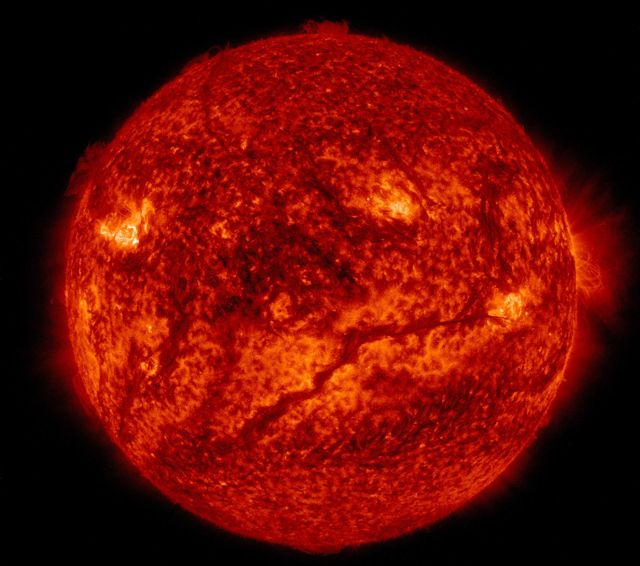
The Sun seen by the Solar Dynamics Observatory
Credit: NASA / GSFC / SDO
NASA ID: GSFC_20171208_Archive_e000790 · Original record
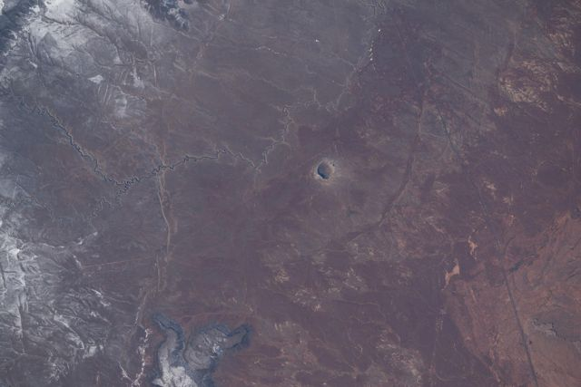
Meteor Crater, Arizona, from the International Space Station
Credit: NASA
NASA ID: iss074e0208832 · Original record
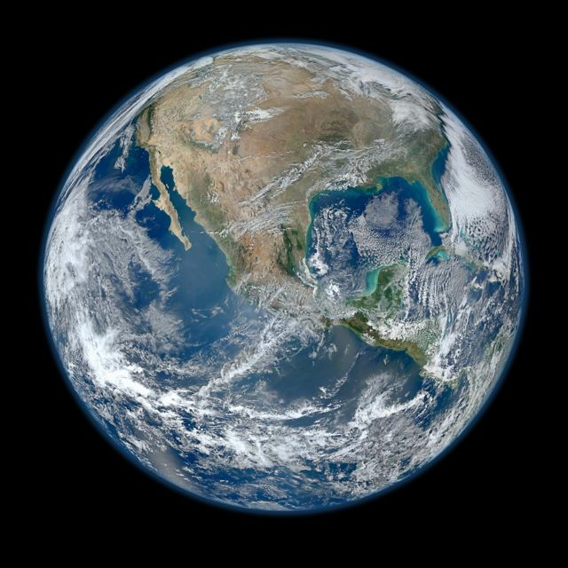
Blue Marble 2012, a composite satellite image of Earth
Credit: NASA / NOAA / GSFC / Suomi NPP
NASA ID: GSFC_20171208_Archive_e001386 · Original record
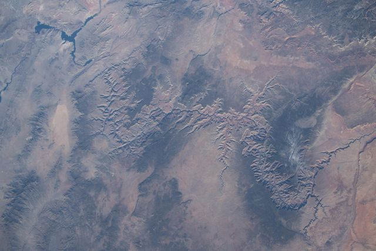
The Grand Canyon and the Colorado Plateau from the International Space Station
Credit: NASA
NASA ID: iss074e0301902 · Original record
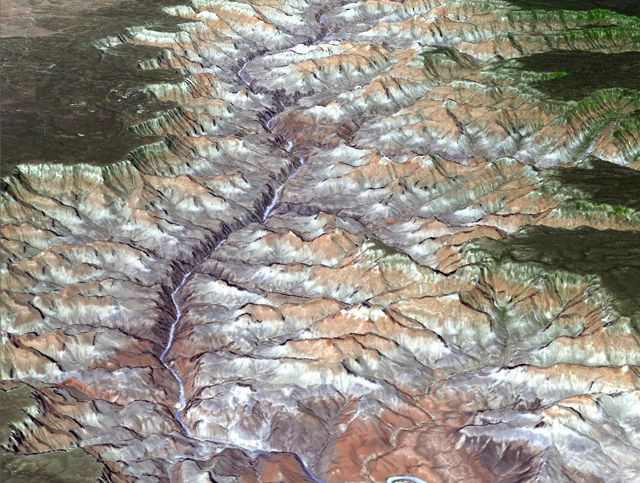
The eastern Grand Canyon seen by the Terra satellite
Credit: NASA / GSFC / METI / ERSDAC / JAROS, and U.S./Japan ASTER Science Team
NASA ID: PIA14897 · Original record
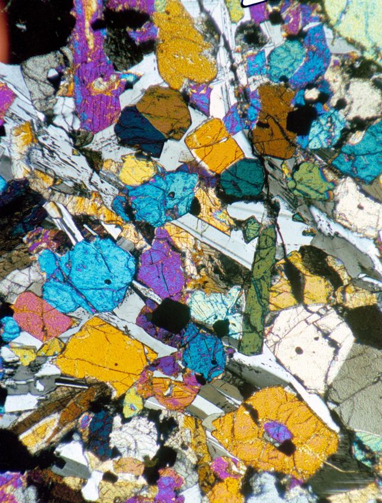
Thin sections of Apollo 12 Moon rocks under a microscope
Credit: NASA
NASA ID: S70-20954 · Original record
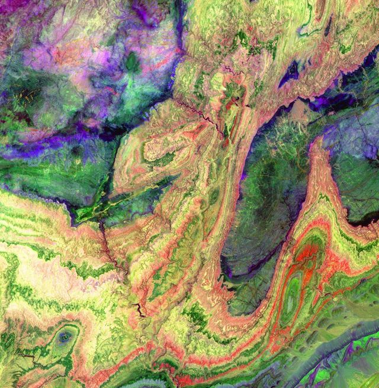
Folded rock layers of the Anti-Atlas Mountains, Morocco
Credit: NASA / GSFC / METI / ERSDAC / JAROS, and U.S./Japan ASTER Science Team
NASA ID: PIA03893 · Original record
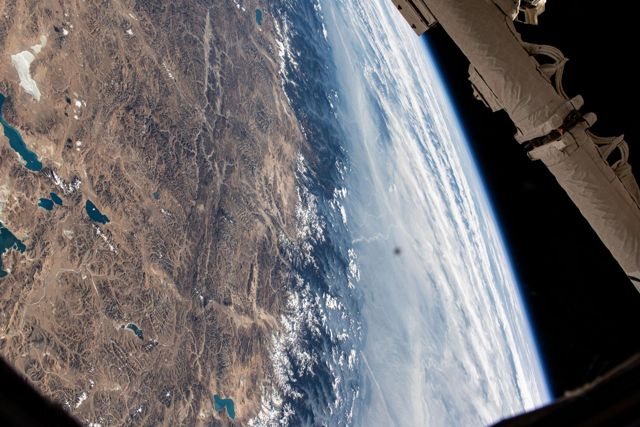
The Himalayas between the Tibetan Plateau and India
Credit: NASA
NASA ID: iss072e397138 · Original record
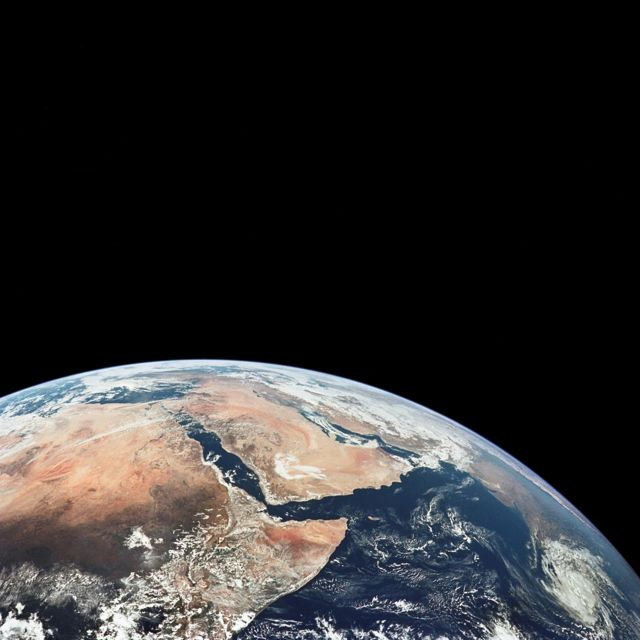
Arabia and north-east Africa from Apollo 17
Credit: NASA
NASA ID: as17-148-22718 · Original record
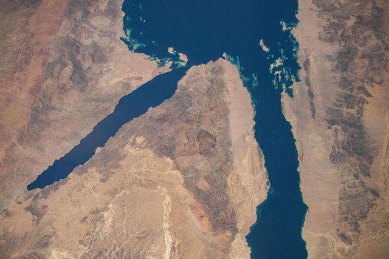
The Gulf of Aqaba and the Gulf of Suez at the north end of the Red Sea
Credit: NASA
NASA ID: iss071e183804 · Original record
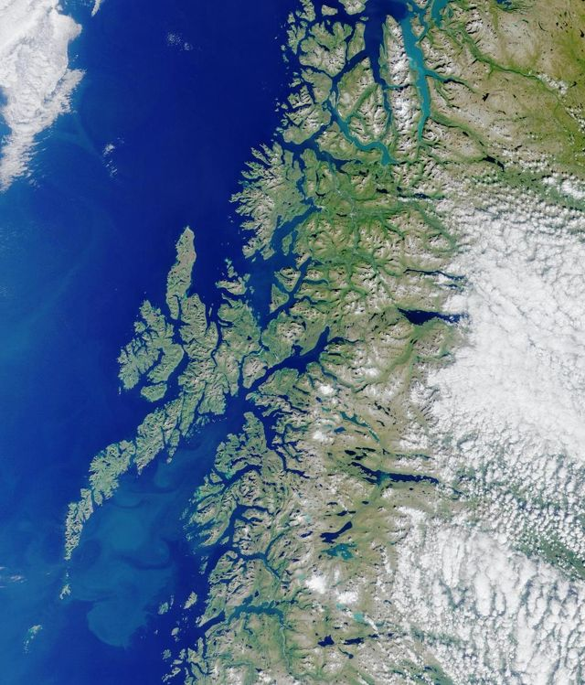
Lofoten Islands and the fjord coast of Norway
Credit: NASA / GSFC / LaRC / JPL, MISR Team
NASA ID: PIA03424 · Original record
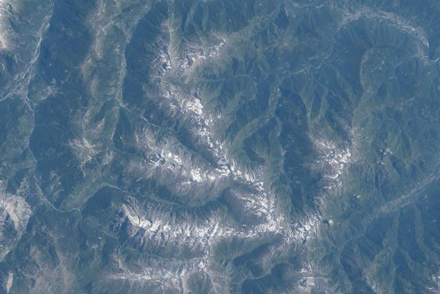
The Swiss Alps from the International Space Station
Credit: NASA / photographed by Sultan Alneyadi, ISS Expedition 69
NASA ID: iss069e025225 · Original record
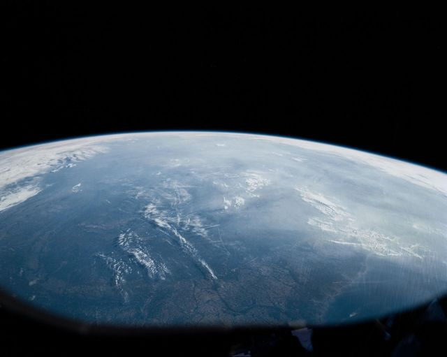
The southern Appalachian Mountains, USA
Credit: NASA
NASA ID: s31-151-113 · Original record
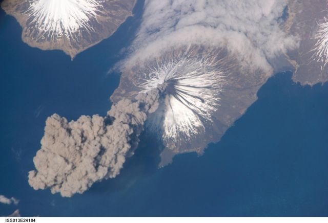
Eruption of Cleveland Volcano, Aleutian Islands, Alaska, May 2006
Credit: NASA
NASA ID: iss013e24184 · Original record
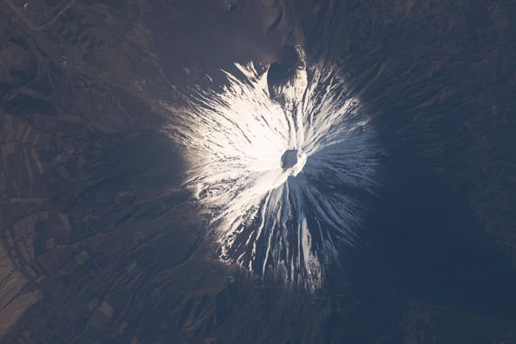
Mount Fuji, Japan, seen from almost directly above
Credit: NASA
NASA ID: iss074e0459342 · Original record
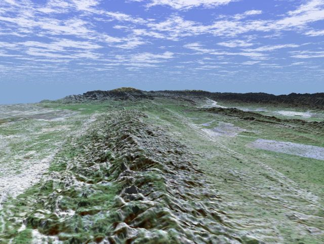
The San Andreas Fault in the Carrizo Plain, California
Credit: NASA / JPL
NASA ID: PIA02786 · Original record
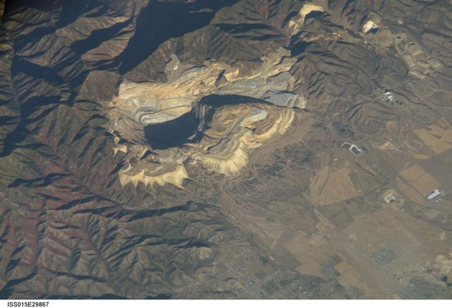
Bingham Canyon Mine, Utah, one of the largest open-pit mines in the world
Credit: NASA
NASA ID: iss015e29867 · Original record
Diagrams and text
The text and diagrams were written and drawn for this site. They are an independent introduction to geology and do not reproduce any published book.
Sources and further reading
- USGS: This Dynamic Earth, the story of plate tectonics
- International Commission on Stratigraphy: International Chronostratigraphic Chart
- USGS Volcano Hazards Program
- Smithsonian Institution Global Volcanism Program
- USGS Earthquake Hazards Program
- NASA Earth Observatory
- NASA Science: Our Solar System
- NASA Image and Video Library